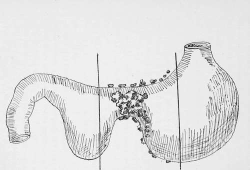
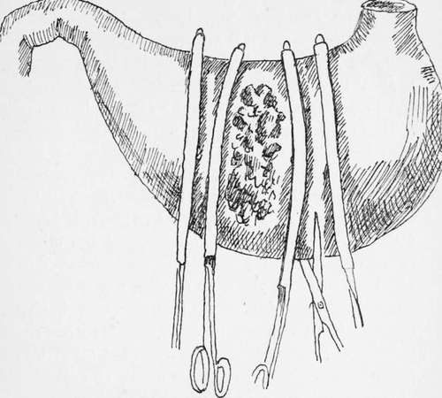
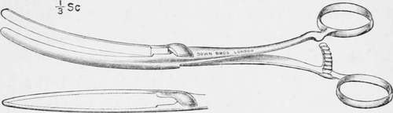

Partial Gastrectomy Of The Pyloric End Of The Stomach. Part 3
Description
This section is from the book "Cancer Of The Stomach", by A. W. Mayo Robson, D.Sc, F.R.C.S.. Also available from Amazon: Cancer of the Stomach.
Partial Gastrectomy Of The Pyloric End Of The Stomach. Part 3
In making this statement it has, however, to be borne in mind that in case of recurrence the places of section of the viscera will be the most likely sites of return growth, which would in that case lead to stenosis, whereas if the side-to-side method were adopted the recurrence of disease would be less likely to interfere with the passage of food onwards.
Moreover, the side-to-side method is available even if a considerable portion of the duodenum should have to be removed, and it is the method to recommend when a patient is very feeble and it is doubtful if he will bear the complete operation at one sitting.
Partial Gastrectomy Of The Body Of The Stomach As In Hour-Glass Deformity
This operation is practically the same as the partial gastrectomy of the pyloric endof the stomach, except that the clamps are placed on each side of the growth, and the section of the stomach is made at a distance of not less than 1 in. away from the tumour on each side. Neither the pyloric nor cardiac orifices are interfered with, and the junction is made by a continnous serous suture of Pagenstecher's thread surrounding a continuous catgut suture embracing all the coats, and bringing together the mucous surfaces.
Fig. 10.-Gastrectomy for malignant hour-glass constriction.
Fig. 11.-Gastrectomy for hour-glass constriction due to cancer.
The vessels along the lesser and greater curvatures are caught in pressure forceps or are divided between two ligatures before applying the clamps.
Complete Gastrectomy
This formidable operation was first conceived and performed by Connor of Cincinnati in 1883. Unfortunately the patient died on the table, and it was not until fourteen years later that the first successful complete gastrectomy was performed by Schlatter, of Zurich, on September 6th, 1897, and the second by C. B. Brigham, of Boston, on February 24th, 1898. In Schlatter's operation the cut end of the oesophagus was united to a loop of jejunum, the duodenal opening being closed. In Brigham's operation the cut ends of the oesophagus and duodenum were united over a Murphy button.
Up to October, 1905, twenty-seven of these operations had been performed by various operators, and it is interesting to note that Mr. H. J. Paterson was able to obtain information that ten of the patients were living and well 8 years, 7 years, 5 years, 4 3/4 years, 4 years, 3 1/2 years, 2 years, If years, and two others at lesser periods after operation ; while others survived 3 3/4 years, If years, 13 months, 9 months, and 7 months respectively, death from operation having occurred in 10 cases-a remarkable series when the severity and extent of the operations are taken into consideration. The operation is merely an extension of that already described under partial gastrectomy, the clamp seizing the oesophagus just above the stomach instead of the stomach itself. If the stomach be pulled gently downwards the orifice may be made to protrude through the aperture in the diaphragm for a little distance so as to leave room for the application of a clamp to the lower end of the oesophagus.
Although, if a small portion of the dome of the stomach be left (sub-total gastrectomy), as was the case in one of my patients who is still living and well over six years later, the operation cannot then be called a complete gastrectomy, yet I have no hesitation in advising this modification in suitable cases, as it enables the junction between the intestine and oesophagus to be made so much more easily. If, however, the operation of total gastrectomy is performed, the open end of the oesophagus can be joined to the intestine by means of sutures, as in Schlatter's case ; by the Murphy button, as in Brigham's case; or by means of the decalcified bone bobbin, as in the case to which I have referred, all of these patients having recovered.
Should it be found that an anastomosis between the oesophagus and the intestine cannot be effected, the opening into the oesophagus may be tightly clamped and ligatured in the groove made by the clamp, the mucous membrane beyond the ligature being taken away. The open end of the duodenum may then be closed and a jejunostomy performed by the method I have described on p. 152. This would be simpler and probably safer than performing a duodenostomy as has been done in one recorded case.
The passage of a rubber oesophageal tube from the mouth to the stomach affords a help while the sutures are being applied, and somewhat simplifies the operation, but if a decalcified bone bobbin is being used the aid of an oesophageal bougie is not called for.
In some of the published articles on gastrectomy arbitrary lines of incision of the stomach-wall have been given ; it seems to me that this is undesirable ; the extent of the disease should be the chief guide and in no case should the cardiac end of the stomach be divided nearer to the growth than from 1 to 2 in.
As the chief course of the lymphatics is along the lesser curvature as far as the point where the gastric artery joins it, in any case of cancer of the pyloric end of the stomach the incision through the lesser curvature ought not to be nearer the pylorus than 1 in. from the cardiac orifice. With due precaution little or no blood is lost, and all soiling of the abdomen by stomach contents is avoided ; drainage is, therefore, usually unnecessary and undesirable.
The clamps I use I have employed for many years for all kinds of stomach and intestinal surgery ; thev are thin in the blade so as not to exert unnecessary pressure, and I usually have them sheathed with indiarubber tubing so that no damage to the visceral walls occurs. They are made for me by Messrs. Down Bros., and are shown in the diagram.
Fig. 12.
Continue to:
- prev: Partial Gastrectomy Of The Pyloric End Of The Stomach. Part 2
- Table of Contents
- next: Partial Gastrectomy Of The Pyloric End Of The Stomach. Part 4
Tags
stomach, operation, cancer, tumour, ulcer, gastric, gastrectomy